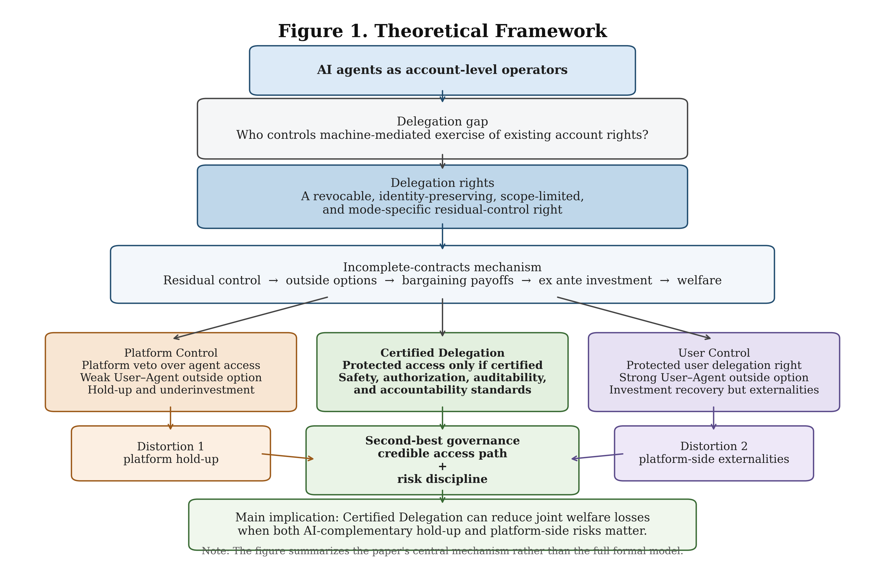
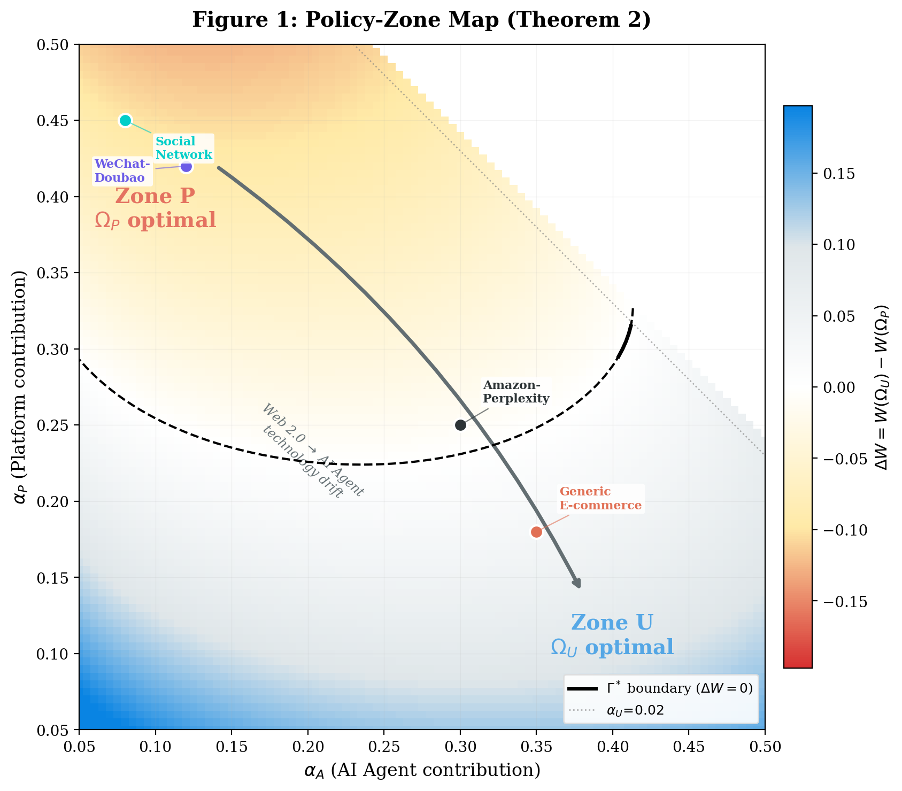
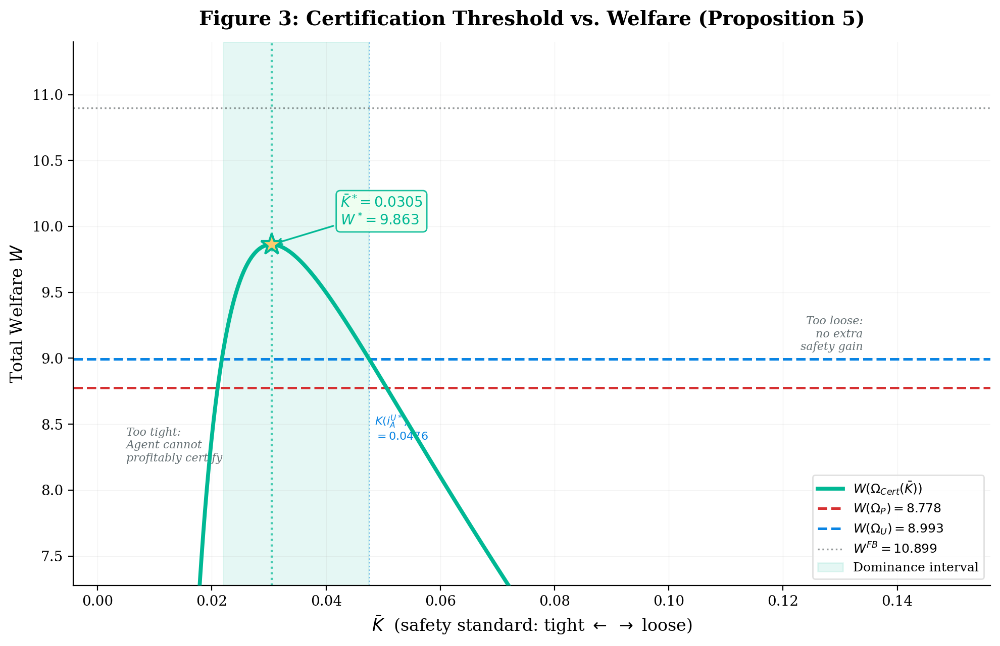

Paper 01 · Property rights 论文 01 · 产权
Delegation Rights: Property, Agency, and Investment Incentives in the Age of AI Agents
Working paper · This version: February 2026 · JEL D23, D86, K11, L12, L86, O34 工作论文 · 本版本：2026 年 2 月 · JEL D23, D86, K11, L12, L86, O34

Abstract摘要
AI agents increasingly operate digital accounts on behalf of users, creating a new residual-control problem in digital platform governance: when a user authorizes a machine agent to exercise her platform-usage rights, should control over this delegation remain with the platform, be assigned unconditionally to the user, or be made conditional on verifiable safety standards? This paper introduces delegation rights as a distinct element of the digital property-rights bundle: the revocable, identity-preserving, scope-limited, and mode-specific right to authorize a machine agent to exercise account-level usage rights.
A three-player incomplete-contracts model with a User, an AI Agent provider, and a Platform shows that platform control can generate hold-up by weakening the User–Agent coalition's outside option and suppressing AI-complementary investment. Unconditional user control can restore investment incentives but may leave security, privacy, congestion, identity, and governance costs only partially internalized by the Agent. The welfare comparison therefore depends on a contribution-threshold logic. The paper then proposes certified delegation, under which the user's delegation right is protected only if the AI agent satisfies verifiable safety, authorization, auditability, and accountability standards. Counterfactual simulations based on Amazon–Perplexity and WeChat–Doubao show how certified delegation can reduce deadweight loss relative to polar regimes in e-commerce and closed social-ecosystem environments.
AI 智能体正越来越多地代表用户操作数字账户，由此在平台治理中产生了一个新的剩余控制权问题：当用户授权机器代理行使自己的平台使用权时，这项委托的控制权应当留在平台手中、无条件归于用户，还是以可验证的安全标准为条件？本文将委托权提出为数字产权束中的一个独立要素：一项可撤销、保留身份、范围受限、方式特定的权利，用以授权机器代理行使账户层面的使用权。
一个包含用户、AI 代理提供方与平台的三方不完全契约模型表明：平台控制会削弱「用户—代理」联盟的外部选项，从而造成套牢并压制与 AI 互补的投资；而无条件的用户控制虽能恢复投资激励，却可能使安全、隐私、拥塞、身份与治理成本只被代理方部分内部化。因此福利比较取决于一条贡献阈值逻辑。本文进而提出认证式委托：只有当 AI 代理满足可验证的安全、授权、可审计与问责标准时，用户的委托权才受保护。基于 Amazon–Perplexity 与微信–豆包的反事实模拟显示，在电商与封闭社交生态两类环境中，认证式委托都能相对于两个极端制度降低无谓损失。
Key findings核心发现
- Delegation is not account transfer, data portability, or API access. It is a mode-of-use entitlement — whether a user may choose a machine agent as the means through which existing account rights are exercised — and it allocates residual control over a non-contractible decision. 委托既不是账户转让，也不是数据可携或 API 接入，而是一项使用方式的权利：用户能否选择机器代理作为行使既有账户权利的途径。它配置的是一个不可缔约决策的剩余控制权。
- Platform control weakens the User–Agent coalition's outside option. The resulting hold-up suppresses ex ante investment in AI-complementary workflows, preference specification, and supervision. 平台控制削弱了「用户—代理」联盟的外部选项，由此产生的套牢压制了事前投资——包括 AI 互补工作流、偏好规格化与监督能力的投入。
- Neither polar regime dominates. A contribution-threshold logic governs the comparison: delegation is more attractive when user and agent investments drive value creation; platform control is more attractive when infrastructure contribution and security risk are high. 两个极端制度都不占优。比较由一条贡献阈值逻辑决定：当用户与代理的投资是价值创造的主力时，委托更可取；当基础设施贡献与安全风险更高时，平台控制更可取。
- Certified delegation — protection conditional on verifiable safety, authorization, auditability, and accountability standards — reduces deadweight loss in both case counterfactuals. The numerical analysis uses a reduced-form agent investment combining productive adaptation and safety compliance, and is calibrated mechanism simulation rather than structural estimation. 认证式委托——以可验证的安全、授权、可审计与问责标准为保护条件——在两个案例反事实中都降低了无谓损失。数值分析使用的是同时包含生产性适配与安全合规的简约式代理投资，属于校准的机制模拟，而非结构估计。
Figures图表


BibTeX
@article{zhang2026delegation,
title = {Delegation Rights: Property, Agency, and Investment
Incentives in the Age of AI Agents},
author = {Zhang, Yukun},
year = {2026},
note = {Working paper}
}